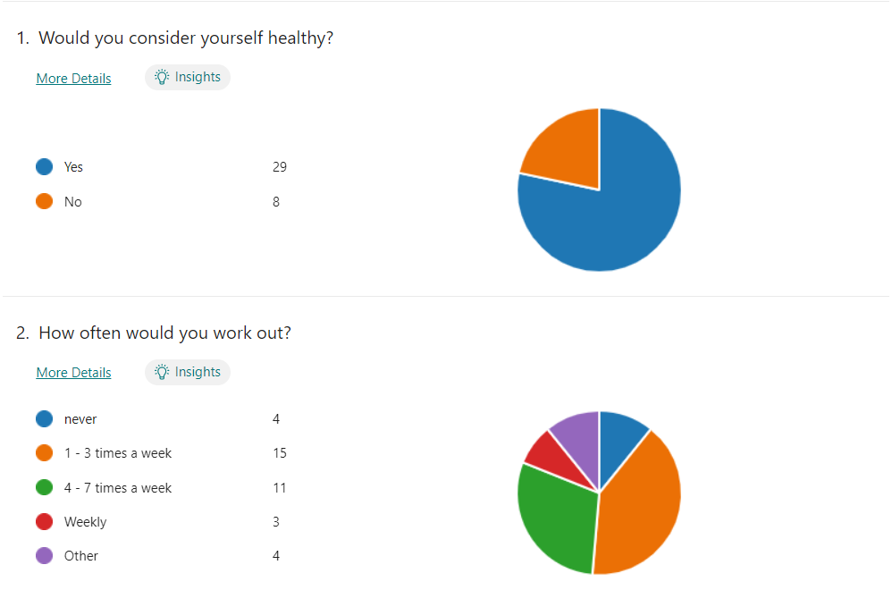
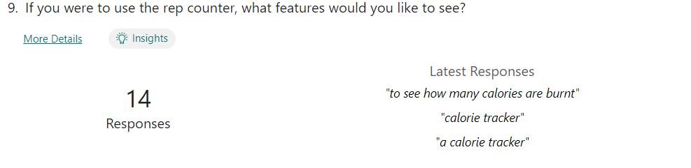

Investigation
During my investigation I wanted to get a better understanding of all areas of a person wellbeing so I could try find ways to improve a person’s wellbeing such as mindfulness, mental health, nutrition and diet. While doing this I was immediately drawn to the physical side of a person’s wellbeing, as I know many people who struggle with this area specifically students in secondary school, with this belief I decided that my target audience would be students between 12 and 18. I immediately started discussing ideas about this area with my peers going through areas such as step trackers, calorie trackers, a heartrate monitor until eventually I came up with the idea of a bicep rep tracker. I felt this idea was perfect for me.
I would have the user create or login to an account on thonny which would contain their name, gender and information of previous workouts. Once this was completed the user input their chosen weight into the microbit it would ask them would they like to start tracking the angle, send this to thonny which would transfer it into reps.
I hypothesised that there could be human error in some areas so I would have to implement a confirmation request for the weight loop to ensure that it would be correct.
During my research I discovered similar projects in this. I would similarly track the reps completed, however these projects would use a camera and track their arm motion. With this they would be able to offer guidance on their form. I knew I would not be able to do this, however it did not mean I was unable to use these projects to try develop my own ideas.
My hopes at the start of the project was:
To create a way of transferring the angle of the microbit to the reps completed.
Get multiple data points such as name, gender, chosen weight, and calories burnt. This data would be needed for the predictions and also the what if questions.
Implement a timer system into the project.
Allow the user to choose what specific workouts they would like to compare.
Compare the last workout of both users.
Add a separate process of tracing how many bench press reps where completed.
Meet all basic and advanced requirements through the use of the microbit and thonny.
In the survey I conducted I got many responses represented by the graphs below:
Images Side by Side

